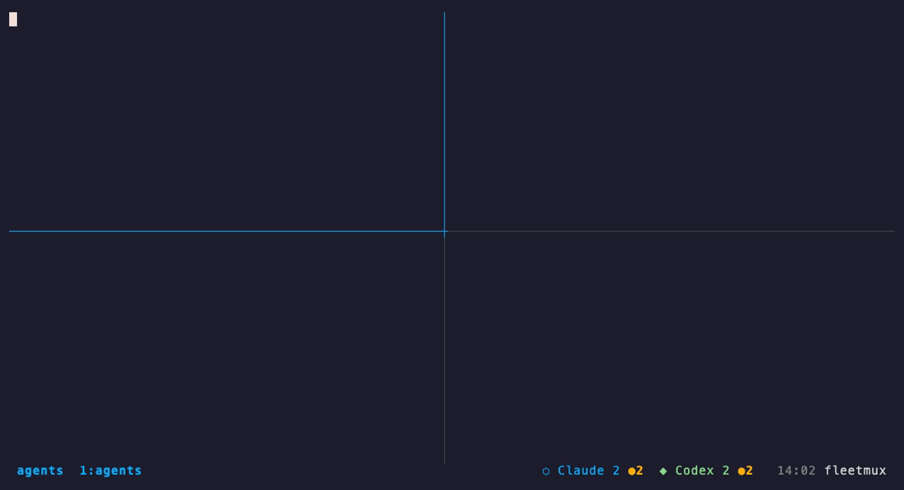

Open source · MIT · 三件套
一个人，
跑一个 agent 舰队。
Claude Code、Codex、Cursor、Gemini 同时开着七八个 pane，四十个项目轮着来——这是我们每天真实的工作方式。这三个仓库，就是让它跑得动的全部东西。
问题
单个 agent、单个仓库没问题。到第 4 个项目就撑不住了。
看不见。八个 pane 里哪个在等你审批、哪个早就干完了？你得一个个切过去看。
记不住。每个新会话都重新推导：哪个项目管什么、上次做到哪、什么已经试过。
学不会。本能的修法是往 CLAUDE.md 里再贴一段。每一个教训都让 prompt 长一点，直到没有一条能可靠触发。
FleetMux
哪个 agent 在等你，一眼看到，一键跳过去。

状态栏 ⬡ Claude 2 ●1 ◆ Codex 2 ●1：两个 Claude pane，一个在等审批；两个 Codex，一个已空闲。Ctrl-q Enter 跳到下一个需要你的 pane。
- 按命令识别，不靠标题。Claude Code 把 pane 标题设成对话主题，Codex 设成任务名——真实服务器上 12 个 Claude、16 个 Codex，标题里只有 1 个写着 "claude"。看
pane_current_command就没有歧义。 - 状态从屏幕读。"esc to interrupt" = 忙；"Do you want to proceed?" = 等审批；都没有 = 空闲等你。29 个 pane 探测 0.4 秒。
- 一条命令装好一切：tmux + 插件 + Starship + Nerd Font，可重复运行（CI 真装两遍做 diff），
fleetmux-doctor体检，fleetmux-start claude codex直接拉起 agent。
# 安装 bash <(curl -fsSL https://raw.githubusercontent.com/xiaolongnk/fleetmux/main/bin/install.sh) # 或者只要状态栏——加进你自己的 ~/.tmux.conf set -g @plugin 'xiaolongnk/tmux-agent-status'
SuperHarness
只守一个数字：always-loaded tax。
CLAUDE.md 里的每一行，都是每次会话都要交的税。SuperHarness 把每一层——规则、skill、记忆、知识、任务状态——都拆成"每次都加载的小索引"和"命中才加载的库"。库可以无限长，索引必须持平。
- 组合，不是单任务。需求进来 → registry 路由到项目 → 该项目的 agent 定义说"这里怎么干"，任务板说"干到哪了"。personal / work 两个 tier 决定 git 与 review 流程，不靠每次临场判断。
- 教训进库，核心不涨。纠正 →
learn路由到对的层 →curate把不再值得常驻的沉淀进 knowledge/ →check证明索引没长。 - 可证伪。
superharness check度量真实的加载面，税涨了就 exit 1；registry / agent / 任务板 / 记忆索引不一致也红。
npm create superharness my-hub npx create-superharness add-project notes personal npx create-superharness check
实测（真实 claude 会话跑在生成的仓库里）
T1 路由 "CSV 导入后搜索不到" → acme-notes，先找到既有教训 + 任务板状态
T2 冷启动 全新会话："接着做 share-link" → share.js:74 · a3f9c1e · 下一步 · 阻塞点
T3 规模 +30 个项目 → 每项目 +94 字节，路由仍只读 registry 一个文件
T4 学习 /learn 一条跨项目教训 → 进 knowledge/，MEMORY.md 未动，税 +0
15
条 discipline
索引常驻，正文按需
索引常驻，正文按需
13
个 skill
按 description 命中加载
按 description 命中加载
18
条测试 + 4 项行为验证
对 tarball 跑
对 tarball 跑
从这里开始
三个都是 MIT。从一个每天真实跑着 40 个项目的 harness 里抽出来，仓库里所有项目、主机、事故都是虚构的。
github.com/xiaolongnk/fleetmux → github.com/xiaolongnk/tmux-agent-status → github.com/xiaolongnk/SuperHarness →在手机上看这些 agent？Termio 用的是同一个探针。
数字均来自当天的实测记录（fleetmux 8985263，SuperHarness 08848d1）